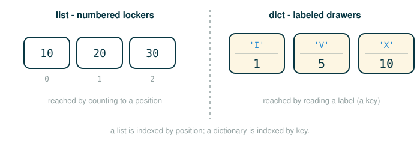

2.4 Dictionaries, Local State, and Nonlocal Assignment
You have already seen that a list can change after you build it. This lesson takes mutation two steps further.
First you will meet the dictionary, a built-in object that stores values under names you choose instead of under numeric positions. By the end you will be able to build one, look a value up by key, change it, ask it for all of its values at once, build one with a comprehension, and avoid the two mistakes that crash beginner code.
Then you will build a function that remembers. So far every function call has started from a clean slate: call it twice with the same input and you get the same output. You will write a withdraw function whose answer depends on every withdrawal that came before it, and to do that you will need one new statement, nonlocal, plus a clear picture of which frame holds the changing value.
The thread connecting both halves is the same one from the previous lesson: a name is a label that points to a value, and mutation lets the thing behind the label change over time.
A Dictionary Is a Set of Labeled Drawers
Picture a list as a row of numbered lockers. To get something out you have to know its locker number: locker 0, locker 1, locker 2. The number is the only way in.
The figure below contrasts the two ways of reaching a value: a list indexed by position versus a dictionary indexed by a written label.

A dictionary is a set of drawers with written labels instead of numbers. One drawer is labeled 'I', another 'V', another 'X'. To get a value you read the label, not a position. You never ask "what is in drawer two?"; you ask "what is filed under 'X'?" The labels are called keys, the things filed under them are called values, and the whole structure records a set of correspondences from keys to values.
This matters because most real data is naturally labeled, not numbered. A phone book maps names to numbers. A menu maps dishes to prices. Roman numerals map letters to amounts. None of those are "the third thing"; they are "the thing filed under this name."
Dictionaries in Python
You write a dictionary with curly braces. Inside, each entry is a key, then a colon, then a value, and entries are separated by commas.
# (1)
numerals = {'I': 1.0, 'V': 5, 'X': 10}
This binds the name numerals to a dictionary that records three correspondences:
'I' -> 1.0
'V' -> 5
'X' -> 10Read the literal one piece at a time. Each row says what that piece does, and the last row states the value the whole expression produces.
{'I': 1.0, 'V': 5, 'X': 10}
├─ { ............... begins a dictionary literal
├─ 'I' ............. the first key (a label you choose)
├─ : ............... separates a key from its value
├─ 1.0 ............. the value filed under 'I'
├─ , ............... separates one entry from the next
├─ 'V': 5 .......... the second key and its value
├─ 'X': 10 ......... the third key and its value
├─ } ............... ends the dictionary literal
└─ evaluates to a dictionary with keys 'I', 'V', 'X'The colon is the connector: it is what joins a label to the thing behind it.
Looking Up a Value by Key
To read a value out, you use square brackets, the same brackets a list uses. The difference is what goes inside them: a list takes a position, a dictionary takes a key.
Start with a tiny warm-up dictionary you can check at a glance.
# (2)
prices = {'apple': 2, 'pear': 3}
prices['pear']
You filed 3 under 'pear', so reading 'pear' back gives:
3Now the official example, on the Roman-numeral dictionary from (1):
# (3)
numerals['X']
The result is:
10Here is the lookup broken down. Notice the value inside the brackets is a key to match, not a position to count to.
numerals['X']
├─ numerals ........ the dictionary to search
├─ [ ............... begins a key lookup
├─ 'X' ............. the key to find
├─ ] ............... ends the lookup
└─ evaluates to 10 (the value filed under 'X')Changing a Dictionary
A dictionary is mutable, so you can change it in place after building it. Assigning to a bracketed key does one of two things: if the key already exists, it replaces that key's value; if the key is new, it adds a fresh entry.
Warm up on prices. The key 'apple' already exists, so this replaces its value:
# (4)
prices['apple'] = 5
prices['banana'] = 4
prices
{'apple': 5, 'pear': 3, 'banana': 4}The first line overwrote 'apple' from 2 to 5; the second line added a brand-new 'banana' entry. Now the official example does the same two moves on numerals:
# (5)
numerals['I'] = 1
numerals['L'] = 50
numerals
The transcript displays:
{'I': 1, 'V': 5, 'X': 10, 'L': 50}Two distinct things happened, and they are the whole point:
'I'already existed, so its value changed from1.0to1.'L'did not exist, so Python added a new key-value pair.
Do not read meaning into the printed order. A dictionary is a mapping from keys to values, not a row of positions, so "which entry comes first" is not part of what it means. (Modern Python does keep entries in the order you inserted them, which is handy, but you should never rely on order to decide what a dictionary represents.)
Asking a Dictionary for All Its Values
A dictionary carries methods, just like the string and list objects you have already met. The values method hands back an iterable view of every value in the dictionary, which you can feed straight into a function like sum.
Warm-up first, where you can add the numbers in your head:
# (6)
prices = {'apple': 5, 'pear': 3, 'banana': 4}
sum(prices.values())
12The official example sums the values of numerals:
# (7)
sum(numerals.values())
The result is:
66Here is the call laid out. The .values() part runs first and produces the collection of values; sum then adds them.
sum(numerals.values())
├─ numerals ............ the dictionary
├─ .values() ........... produces a view of all its values: 1, 5, 10, 50
├─ sum(...) ............ adds those values together
└─ evaluates to 66Asking a Dictionary for Its Keys and Its Pairs
The values method has two companions, and together the three are the standard way to ask a dictionary what it contains. The keys method hands back a view of every key, and the items method hands back a view of every key-value pair as a two-element tuple. Like values, each returns a view you can loop over or hand to a function such as list.
Use numerals again. Ask first for its keys:
# (8)
list(numerals.keys())
The result is:
['I', 'V', 'X', 'L']Now ask for its pairs. Each entry comes back as a (key, value) tuple:
# (9)
list(numerals.items())
The result is:
[('I', 1), ('V', 5), ('X', 10), ('L', 50)]Here is numerals.items() broken down. The view it produces is a sequence of pairs, one pair per entry, which is exactly the shape dict accepts to rebuild a dictionary.
list(numerals.items())
├─ numerals ............ the dictionary
├─ .items() ............ produces a view of its (key, value) pairs
├─ list(...) ........... collects those pairs into a list
└─ evaluates to [('I', 1), ('V', 5), ('X', 10), ('L', 50)]The same caution as before applies to all three views: the order you see reflects insertion order, not anything about what the dictionary means.
Building a Dictionary from Pairs
You do not have to type a dictionary literal. The built-in dict function builds a dictionary out of a list of two-element pairs: in each pair, the first element becomes a key and the second becomes its value.
A small bridge you can verify by hand:
# (10)
dict([('a', 1), ('b', 2)])
{'a': 1, 'b': 2}The official example builds a squares table:
# (11)
dict([(3, 9), (4, 16), (5, 25)])
The result is:
{3: 9, 4: 16, 5: 25}The anatomy shows how each pair is split:
dict([(3, 9), (4, 16), (5, 25)])
├─ dict ................ the dictionary-building function
├─ [ ... ] ............. a list of pairs to convert
├─ (3, 9) ............. first pair: key 3, value 9
├─ (4, 16) ............ second pair: key 4, value 16
├─ (5, 25) ............ third pair: key 5, value 25
└─ evaluates to {3: 9, 4: 16, 5: 25}Two Rules About Keys
Dictionaries impose two restrictions, and both come straight from how lookup has to work.
First, a key cannot be a mutable value or contain one. A list, for instance, cannot be a key. The reason is concrete: a key is the address Python uses to find a value, and if the address could change after you filed something under it, Python might never find that value again. Because tuples are immutable, they make good keys when you need a compound label:
# (12)
locations = {('Berkeley', 'CA'): 'campus', ('New York', 'NY'): 'city'}
locations[('Berkeley', 'CA')]
The result is:
'campus'Second, a single key can have at most one value at a time. A dictionary maps each key to one current value, so assigning to a key that already exists replaces the old value rather than keeping both. You saw exactly this when numerals['I'] = 1 overwrote 1.0.
Looking Up a Key That Might Be Missing
If you use square brackets on a key that is not in the dictionary, Python cannot produce a value and raises a KeyError. When a missing key is a normal possibility rather than a bug, the get method is the safe tool: you give it a key and a fallback, and it returns the stored value if the key exists or the fallback if it does not.
A bridge on prices, which has no 'cherry':
# (13)
prices.get('cherry', 0)
prices.get('apple', 0)
0
5The official examples ask numerals for one missing key and one present key:
# (14)
numerals.get('A', 0)
numerals.get('V', 0)
The results are:
0
5Here is numerals.get('A', 0) broken down. The second argument is the answer you get back precisely when the key is absent.
numerals.get('A', 0)
├─ numerals ........ the dictionary
├─ .get ............ the look-up-with-a-fallback method
├─ ( ............... begins the arguments
├─ 'A' ............. the key to look for
├─ , ............... separates the arguments
├─ 0 ............... the fallback to return if 'A' is missing
├─ ) ............... ends the call
└─ evaluates to 0 (because 'A' is not a key here)Building a Dictionary with a Comprehension
You met list comprehensions earlier; dictionaries have their own. A dictionary comprehension runs a loop and produces a key and a value on each pass, collecting them all into one new dictionary.
A bridge you can compute in your head:
# (15)
{x: x + 1 for x in range(3)}
{0: 1, 1: 2, 2: 3}The official example maps each number to its square:
# (16)
{x: x * x for x in range(3, 6)}
The result is:
{3: 9, 4: 16, 5: 25}The anatomy reads the comprehension left of the for as the recipe for one entry, and the part after for as the loop that supplies the values:
{x: x * x for x in range(3, 6)}
├─ { ............... begins a dictionary comprehension
├─ x ............... the key for this entry
├─ : ............... separates the key from the value
├─ x * x ........... the value for this entry
├─ for x in ........ loops, binding x in turn
├─ range(3, 6) ..... supplies the values 3, 4, 5
├─ } ............... ends the comprehension
└─ evaluates to {3: 9, 4: 16, 5: 25}A Value That Has State
Now we turn to functions that remember.
A value has state when its current behavior depends on its history. A bank balance is the everyday example. Start an account with a balance of 100 dollars. A first withdrawal of 25 succeeds and leaves 75; the next withdrawal of 25 leaves 50; a withdrawal of 60 now fails because only 50 remains; a withdrawal of 15 then leaves 35. Each result depends on every withdrawal that came before.
We want a withdraw function that behaves exactly like that account. Calling it should look like this:
# (17)
withdraw(25)
withdraw(25)
withdraw(60)
withdraw(15)
with these return values, in order:
75
50
'Insufficient funds'
35Look closely at what that demands. The first and second lines are the same call, withdraw(25), yet they return different numbers, 75 and 50. A function whose answer can change between identical calls is a non-pure function: it depends on something beyond its arguments, namely the running balance it remembers between calls.
A Function That Builds a Function That Remembers
The trick is to let one function build another. The outer function make_withdraw takes a starting balance. Inside it, we define an inner function withdraw that does the actual subtracting, and then we return that inner function. The returned withdraw keeps access to the balance that lived in the outer call, and it updates that same balance every time it runs.
# (18)
def make_withdraw(balance):
"""Return a withdraw function that draws down balance with each call."""
def withdraw(amount):
nonlocal balance
if amount > balance:
return 'Insufficient funds'
balance = balance - amount
return balance
return withdraw
To get a working account, call make_withdraw with a starting balance and keep the function it hands back:
# (19)
withdraw = make_withdraw(100)
withdraw(25)
withdraw(25)
withdraw(60)
withdraw(15)
The return values are:
75
50
'Insufficient funds'
35The single line that makes this possible is nonlocal balance. Read it as an instruction about where an assignment should land:
nonlocal balance
├─ nonlocal ........ a declaration about the name that follows
├─ balance ......... the name being declared
└─ states that assignments to balance rebind the balance
in the enclosing make_withdraw frame, instead
of creating a new local balanceDon't worry if "the enclosing make_withdraw frame" still feels hand-wavy. The next section, Tracing the Frames, draws exactly which frame this is and why it survives between calls.
Without that line, balance = balance - amount inside withdraw would create a brand-new local balance that exists only for the length of one call and vanishes when the call returns. Nothing would carry over, so the account could never remember anything. The nonlocal declaration redirects the assignment outward, to the balance that lives in the make_withdraw frame, so every call to withdraw reads and updates the one shared running total.
Tracing the Frames
Mutation across calls is exactly the situation where you should slow down and draw frames, because the whole behavior lives in which frame holds balance. Here is a smaller version you can step through frame by frame.
# (20)
def make_withdraw(balance):
def withdraw(amount):
nonlocal balance
if amount > balance:
return 'Insufficient funds'
balance = balance - amount
return balance
return withdraw
wd = make_withdraw(20)
wd(5)
wd(3)
Step the block above and watch the frames open. Notice that the make_withdraw frame opens once and stays put, while each call to wd opens its own short-lived withdraw frame whose parent is that one make_withdraw frame. Watch balance in the parent fall from 20 to 15 when the first call runs its assignment, then from 15 to 12 on the second call, while each withdraw frame holds only its own amount.
The two calls to wd create two separate withdraw frames, used and discarded one at a time. What they share is the make_withdraw frame (the stepper labels it f1), and that frame is the single place balance lives. That shared parent is the memory: it persists between calls even though each call's own frame does not.
Reading an Enclosing Name Versus Rebinding It
You only need nonlocal when you assign to an enclosing name. An inner function may freely read a name from an enclosing frame with no declaration at all.
# (21)
def make_reader(x):
def reader():
return x
return reader
Here reader looks up x in its parent frame and returns it. Because it never assigns to x, no nonlocal is needed. The rule is precise: reading reaches outward automatically; only rebinding requires you to declare nonlocal first.
The UnboundLocalError Trap
It is worth seeing what goes wrong when nonlocal is missing, because the error is surprising the first time. Take the withdraw example and delete the declaration:
# (22)
def make_withdraw(balance):
def withdraw(amount):
if amount > balance:
return 'Insufficient funds'
balance = balance - amount
return balance
return withdraw
wd = make_withdraw(20)
wd(5)
Calling wd(5) raises an UnboundLocalError.
The cause is a decision Python makes about the whole function body before it runs a single line. Because withdraw contains an assignment to balance (balance = balance - amount), Python classifies balance as a local name for the entire body. So when execution reaches the earlier line:
# (23)
if amount > balance:
Python tries to read the local balance, but no local balance has been given a value yet. The name exists as a local slot but is unbound, and reading an unbound local is the error.
That is why nonlocal balance belongs near the top of the inner function. It overrides the default classification before the body runs, telling both Python and the reader that balance refers to the enclosing frame's name:
without nonlocal:
balance = balance - amount
means "create or change a balance that is local to withdraw"
with nonlocal:
balance = balance - amount
means "change the balance in the nearest enclosing function frame"⚠Common Beginner Traps
The first trap is hearing nonlocal as a synonym for "global." It is not. A nonlocal name lives in an enclosing function frame, one step out, not in the global frame. Using global here would point at the wrong place entirely.
The second trap is believing every function call starts completely from scratch. The call's own frame does start fresh, but the function can carry a parent frame that holds remembered state, and that parent is what survives between calls.
The third trap is reaching a missing dictionary key with square brackets:
# (24)
numerals['A']
This raises a KeyError. When a missing key is a normal case and you want a fallback instead of a crash, use get.
The fourth trap is treating the printed order of a dictionary as part of its meaning. A dictionary is a mapping from keys to values; "which entry prints first" is not information you should ever depend on.
✓Check Your Understanding
- What is the difference between a dictionary key and a list index?
- You run
wd = make_withdraw(50)and then callwd(30)followed by a secondwd(30). What are the two return values, in order? - What does
numerals.get('A', 0)return when'A'is not a key, and why? - Why does the same call
withdraw(25)return75the first time and50the second time? - Why does the line
balance = balance - amountinsidewithdrawrequirenonlocal balance? - An inner function returns
xfrom its enclosing frame but never assigns tox. Does it need anonlocalstatement?
Show the answers
- A list index is a position counted from zero. A dictionary key is a label the programmer chooses, such as a string or a number, and lookup matches that label rather than counting to a position.
20and then'Insufficient funds'. The first call lowers the sharedbalancefrom50to20and returns20; the second call finds30greater than the remaining20, so it returns'Insufficient funds'and leaves the balance unchanged.- It returns
0. The key'A'is missing, sogetreturns its second argument, the fallback, instead of raising aKeyError. withdrawupdates abalancethat persists in its parent frame. The first call lowers it from100to75, and the second call sees that updated75and lowers it to50.- Because
withdrawassigns tobalance, Python would otherwise treatbalanceas a new local name.nonlocal balanceredirects the assignment to thebalancein the enclosingmake_withdrawframe, which is the value that must persist. - No. Reading an enclosing name reaches outward automatically; only rebinding an enclosing name requires
nonlocal.
§Summary
A dictionary stores correspondences from keys to values, where the keys are labels you choose rather than numeric positions. You build one with braces or with dict, read a value with key lookup in square brackets, change it in place by assigning to a key, ask for every value with values, look up safely with get, and construct one compactly with a comprehension. Keys must be immutable, and each key holds one value at a time. Local state extends mutation to functions: by returning an inner function from an outer one, you make a function that remembers a value across calls. The nonlocal statement is what lets the inner function rebind that remembered value in its enclosing frame rather than shadow it with a fresh local. Because names can now point at evolving state, frame-by-frame environment diagrams become the reliable way to predict what your code will do.
▶Step-Through Checkpoint
This block is the lesson's capstone: a withdraw function that remembers. Before you step through it, write down two predictions: how many local frames will open over the whole run, and how many times the line balance = balance - amount actually runs.
# (25)
def make_withdraw(balance):
def withdraw(amount):
nonlocal balance
if amount > balance:
return 'Insufficient funds'
balance = balance - amount
return balance
return withdraw
withdraw = make_withdraw(100)
withdraw(25)
withdraw(25)
withdraw(60)
withdraw(15)
Check both as you step. Five local frames open, one for make_withdraw and one per call to withdraw, but the subtraction line runs only three times: the third call returns early, so balance in the make_withdraw frame falls to 75, then 50, holds there, and ends at 35.